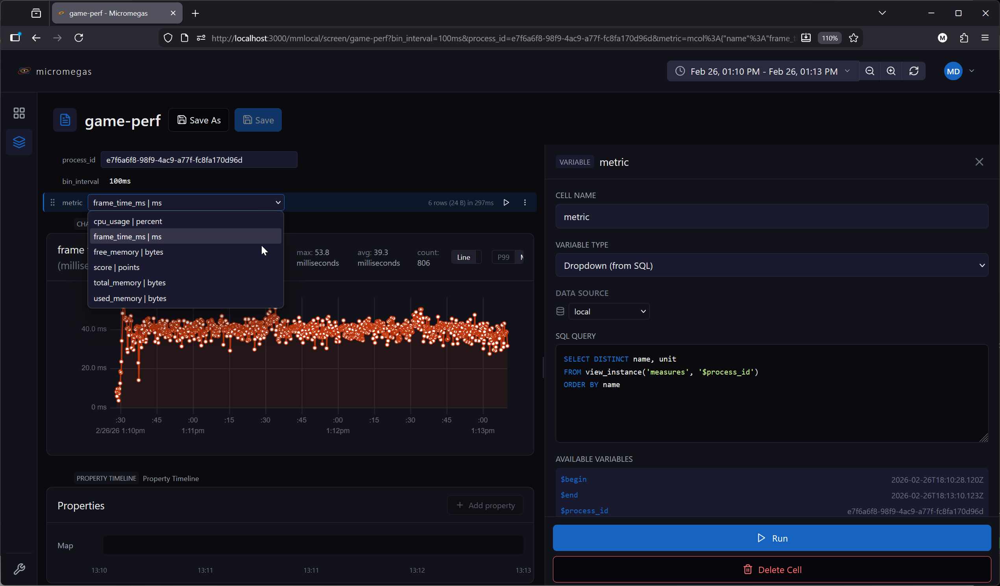
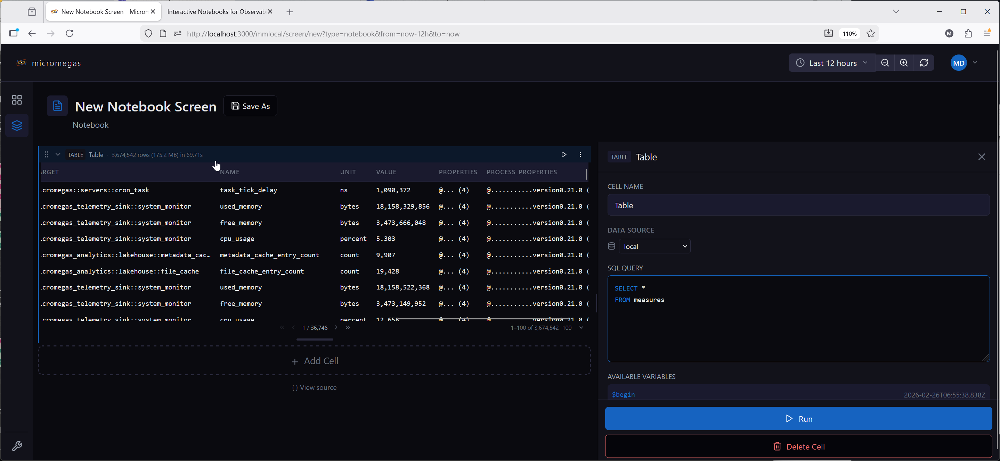
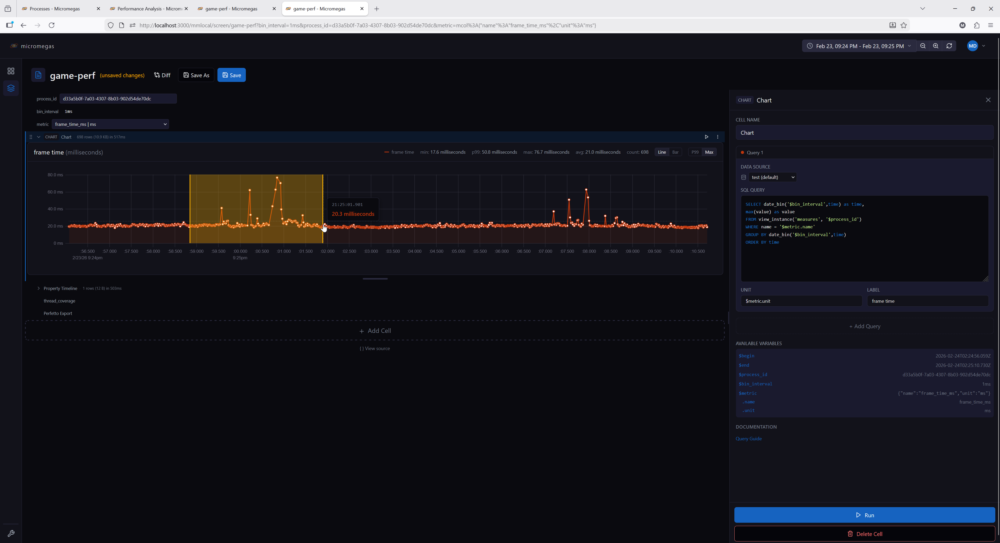
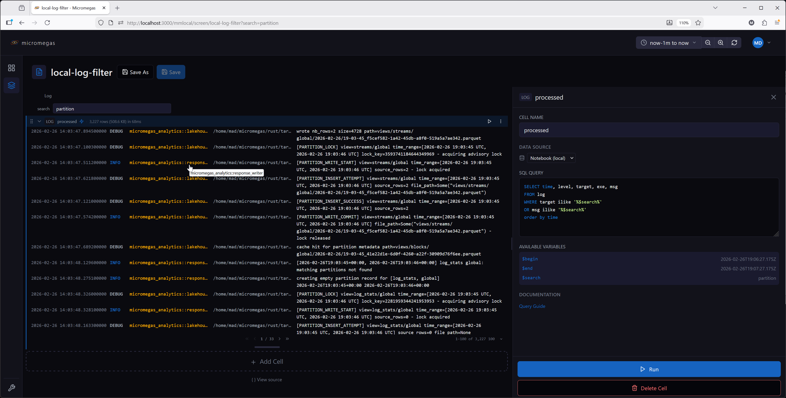
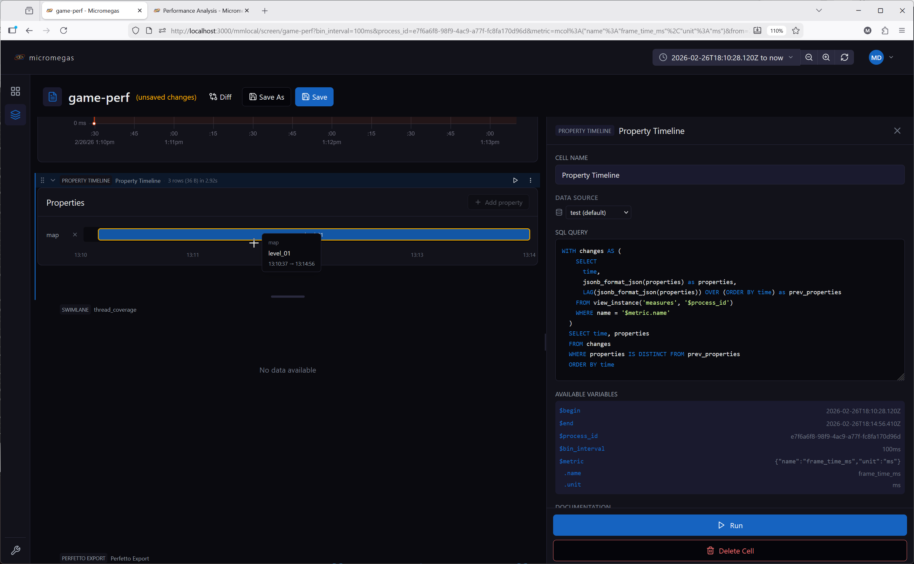
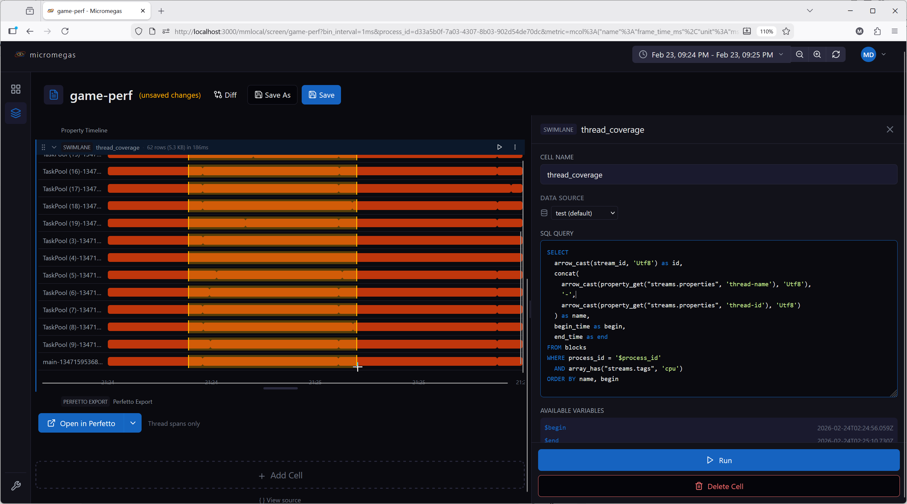
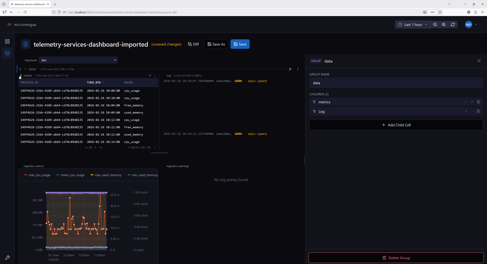

Cell Types Reference¶
Notebooks support 11 cell types. Each cell has a name (unique within the notebook), a type, and a layout controlling its display height and collapsed state.
Data cells (table, chart, log, etc.) execute SQL queries and register their results in the local WASM query engine, making them available for downstream cells to query.
Markdown¶
Static text and documentation using GitHub Flavored Markdown.
Configuration:
| Field | Type | Description |
|---|---|---|
content |
string | Markdown text to render |
Features:
- Full GitHub Flavored Markdown: headings, tables, lists, code blocks, strikethrough
- Supports variable substitution:
$variable,$variable.column,$begin,$end - Validates macro references during editing — warns about undefined variables
- Does not execute queries or block downstream cells
Example content:
Variable¶
User-configurable inputs that populate $variable references in downstream cells. Variable cells render in the cell title bar rather than taking up vertical space.
There are four variable subtypes, controlled by the variableType field.
Common configuration:
| Field | Type | Description |
|---|---|---|
variableType |
'text' | 'combobox' | 'expression' | 'datasource' |
Variable subtype |
defaultValue |
string or object | Default value used when no URL override is present |
dataSource |
string | Data source for SQL queries (combobox only) |
See Variables for full documentation of the variable system including scope, expressions, and URL sync.
Text¶
Free-form text input. The user types a value directly. No SQL execution.
Combobox¶
Dropdown populated by a SQL query. Single-column queries produce simple string options. Multi-column queries produce options with named fields accessible via $variable.column syntax.
| Field | Type | Description |
|---|---|---|
sql |
string | SQL query returning option values |
dataSource |
string | Data source for the query |
-- Single column: options are strings
SELECT DISTINCT name FROM measures
-- Multi-column: options are objects with .name and .unit fields
SELECT DISTINCT name, unit FROM measures
After execution, the current value is validated against available options. If invalid, the default value or first option is auto-selected.

Expression¶
Computed value from a JavaScript expression. Evaluated automatically — not user-editable at runtime.
| Field | Type | Description |
|---|---|---|
expression |
string | JavaScript expression to evaluate |
Available bindings: $begin, $end, $duration_ms, $innerWidth, $devicePixelRatio, and upstream variables as $variableName.
Available functions: snap_interval(), Math.*.
See Expression Evaluation for details.
Datasource¶
Dropdown populated with available data sources from the API. Use with $variableName in a query cell's data source field to route queries to user-selected backends.
Table¶
SQL query results displayed in a sortable, paginated table.
Configuration:
| Field | Type | Description |
|---|---|---|
sql |
string | SQL query with macro substitution |
dataSource |
string | Data source override |
Options:
| Field | Type | Description |
|---|---|---|
sortColumn |
string | Currently sorted column |
sortDirection |
'asc' | 'desc' |
Sort direction |
pageSize |
number | Rows per page (default: 50) |
hiddenColumns |
string[] | Columns to hide |
overrides |
array | Column format overrides |
Features:
- Sticky header with click-to-sort columns
- Column hiding via context menu, with a restoration bar to unhide
- Client-side pagination with configurable page size
- Sort column available as
$order_bymacro in SQL for server-side sorting - Column format overrides with markdown and row macros (
$row.columnName) - Results registered in the local WASM query engine under the cell name for downstream queries
Column format overrides:
Override how a column renders by providing a markdown format string with row macros:
This renders the exe column as a link to the process page.
Example SQL:

Transposed Table¶
SQL results with rows and columns swapped. The original column names become the first column, and each result row becomes a subsequent column. Useful for displaying metadata or key-value properties.
Configuration:
Same as Table — sql, dataSource, and options for hidden rows, page size, and format overrides.
Options:
| Field | Type | Description |
|---|---|---|
pageSize |
number | Page size for scrolling |
hiddenRows |
string[] | Hidden row names (original column names) |
overrides |
array | Row rendering overrides |
Features:
- Row hiding via right-click context menu, with a restoration bar to unhide
- Row format overrides with markdown and row macros (same syntax as table column overrides)
- Results registered in the local WASM query engine under the cell name for downstream queries
Example:
A query returning process_id, exe, username, computer for a single row displays as:
| Field | Value |
|---|---|
| process_id | abc-123 |
| exe | my-service |
| username | admin |
| computer | prod-01 |
Chart¶
Multi-query time-series charts supporting line and bar chart types.
Configuration:
| Field | Type | Description |
|---|---|---|
queries |
array | One or more query definitions |
options.scale_mode |
'p99' | 'max' |
Y-axis scaling mode |
options.chart_type |
'line' | 'bar' |
Chart type |
Query definition:
| Field | Type | Description |
|---|---|---|
sql |
string | SQL query returning time + value columns |
name |
string | Query name (used for WASM table registration) |
unit |
string | Y-axis unit label |
label |
string | Series label override |
dataSource |
string | Per-query data source |
Scale modes:
- p99 (default) — scales Y-axis to the 99th percentile, handling outliers gracefully
- max — scales Y-axis from 0 to the maximum value
Features:
- Multiple queries per chart, each with its own data source and unit
- Color-coded series with a rotating palette
- Drag-to-zoom: drag horizontally on the chart to select a time range and zoom in
- Chart type and scale mode toggleable via controls
- Each query's results are registered in the WASM engine as
cellName.queryName
Example:

Log¶
SQL query results formatted as log entries with level-based coloring.
Configuration:
| Field | Type | Description |
|---|---|---|
sql |
string | SQL query returning log data |
dataSource |
string | Data source override |
Options:
| Field | Type | Description |
|---|---|---|
pageSize |
number | Entries per page (default: 50) |
Expected columns:
The renderer auto-classifies columns by name:
time— event timestamplevel— log level (ERROR,WARN,INFO,DEBUG,TRACE)target— logger target/modulemsg— log message
Additional columns are rendered as fixed-width monospace text.
- Results registered in the local WASM query engine under the cell name for downstream queries
Level coloring:
| Level | Color |
|---|---|
| ERROR | Red |
| WARN | Yellow |
| INFO | Gray |
| DEBUG/TRACE | Muted |
Example SQL:

Property Timeline¶
Visualizes how JSON properties change over time as horizontal timeline segments.
Configuration:
| Field | Type | Description |
|---|---|---|
sql |
string | SQL query returning time and properties (JSON) columns |
dataSource |
string | Data source override |
Options:
| Field | Type | Description |
|---|---|---|
selectedKeys |
string[] | Property keys to display as timeline tracks |
Features:
- Parses JSON properties from each row and detects value changes
- Each selected property key displays as a horizontal timeline track
- Interactive key selection — add or remove property keys from the display
- Time range zoom via drag selection
- Fills time gaps with "no value" state
- Results registered in the local WASM query engine under the cell name for downstream queries
Expected columns:
time— timestampproperties— JSON object string (e.g.,{"cpu": 45, "state": "running"})

Swimlane¶
Horizontal lane visualization for thread or async activity over time. Each lane shows one or more time segments as horizontal bars.
Configuration:
| Field | Type | Description |
|---|---|---|
sql |
string | SQL query returning lane data |
dataSource |
string | Data source override |
Required columns:
| Column | Type | Description |
|---|---|---|
id |
string | Unique lane identifier |
name |
string | Lane display name |
begin |
timestamp | Segment start time |
end |
timestamp | Segment end time |
Multiple rows with the same id create multiple segments in one lane. Lanes are ordered by first occurrence in the query results.
Features:
- Fixed label column on the left with lane names
- Horizontal time bars in the center
- Drag-to-zoom time selection
- Time axis with formatted tick marks
- Results registered in the local WASM query engine under the cell name for downstream queries
Example SQL:
SELECT
arrow_cast(stream_id, 'Utf8') as id,
concat(
arrow_cast(property_get("streams.properties", 'thread-name'), 'Utf8'),
'-',
arrow_cast(property_get("streams.properties", 'thread-id'), 'Utf8')
) as name,
begin_time as begin,
end_time as end
FROM blocks
WHERE process_id = '$process_id'
AND array_has("streams.tags", 'cpu')
ORDER BY name, begin

Perfetto Export¶
Exports trace data to Perfetto UI for visualization, or downloads it as a file.
Configuration:
| Field | Type | Description |
|---|---|---|
processIdVar |
string | Variable name containing the process ID (default: $process_id) |
spanType |
'thread' | 'async' | 'both' |
Which span types to include (default: both) |
dataSource |
string | Data source override |
Features:
- Split button: Open in Perfetto (primary) or Download (secondary)
- Shows a warning if the referenced variable is empty or undefined
- Caches the generated trace buffer — cleared when process ID, span type, time range, or data source changes
- Progress indicator during trace generation
- No automatic execution — triggered by user button click
Reference Table¶
Embeds inline CSV data that is registered as a queryable table in the local WASM query engine. Downstream cells can query it by the cell's name.
Configuration:
| Field | Type | Description |
|---|---|---|
csv |
string | CSV data with headers in the first row |
Options:
Same as Table — sortColumn, sortDirection, pageSize, hiddenColumns.
Features:
- CSV is parsed into an Arrow table with automatic type inference (numeric, boolean, string)
- Registered in the WASM engine under the cell name — queryable by downstream cells
- Displays as a sortable, paginated table (same UI as the Table cell)
- Useful for lookup tables, configuration data, or reference values
Example:
A cell named thresholds with this CSV:
Can be queried by a downstream table cell:
SELECT m.name, m.value, t.warn_threshold, t.error_threshold
FROM raw_metrics m
JOIN thresholds t ON m.name = t.metric
WHERE m.value > t.warn_threshold
Horizontal Group (HG)¶
A container cell that arranges its children side by side in a horizontal layout.
Configuration:
| Field | Type | Description |
|---|---|---|
children |
array | Child cell configurations (any type except HG) |
Features:
- Children render side by side with equal width
- Drag children horizontally to reorder within the group
- Drag a child vertically (out of the group area) to extract it to the main cell list
- Add new children via the group editor
- Each child has independent execution, state, and data source settings
- Aggregate stats (row count, byte size) displayed in the group header
Constraints:
- HG cells cannot be nested — no HG inside another HG
- During execution, children are flattened into the main sequence and execute left to right
- Variables defined in child cells are visible to cells below the group
Example use case:
Place two related charts side by side — one showing CPU usage and another showing memory usage — for a compact comparison view.
